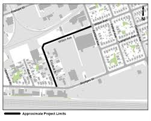

Nossos Projetos Ativos
Futuro Brilhante
Programa de reforço escolar e acompanhamento pedagógico para crianças e adolescentes de 6 a 15 anos. Oferecemos aulas de português, matemática e inglês, além de apoio com tarefas escolares.
Beneficiados:
300 crianças e adolescentes
Primeiro Emprego
Cursos profissionalizantes gratuitos para jovens de 16 a 24 anos. Oferecemos capacitação em informática, atendimento ao cliente, administração e outras áreas, além de orientação para o mercado de trabalho.
Beneficiados:
150 jovens por semestre
Alimento Solidário
Distribuição mensal de cestas básicas e kits de higiene para famílias em situação de vulnerabilidade social. Também oferecemos refeições diárias na sede da ONG.
Beneficiados:
500 famílias mensalmente
Saúde para Todos
Atendimento médico básico, campanhas de vacinação e ações de saúde preventiva. Contamos com médicos, enfermeiros e dentistas voluntários que atendem a comunidade gratuitamente.
Beneficiados:
800 pessoas por mês
Esporte e Vida
Atividades esportivas e recreativas para crianças e adolescentes. Oferecemos aulas de futebol, vôlei, basquete, capoeira e judô, promovendo saúde, disciplina e integração social.
Beneficiados:
200 crianças e adolescentes
Arte e Cultura
Oficinas de música, teatro, dança, artesanato e artes plásticas. Desenvolvemos talentos, estimulamos a criatividade e promovemos o acesso à cultura para crianças e jovens da comunidade.
Beneficiados:
180 participantes
Como Doar
Suas doações transformam vidas!
Cada contribuição, não importa o valor, faz uma diferença significativa na vida de quem mais precisa. Seja um doador e ajude-nos a continuar nosso trabalho social.
PIX
Chave CNPJ:
12.345.678/0001-90
Chave E-mail:
doacoes@esperancasolidaria.org.br
Transferência Bancária
Banco: Banco do Brasil
Agência: 1234-5
Conta Corrente: 67890-1
CNPJ: 12.345.678/0001-90
Depósito/TED
Banco: Caixa Econômica Federal
Agência: 0987
Operação: 003
Conta Poupança: 54321-6
Cartão de Crédito
Acesse nosso site:
www.esperancasolidaria.org.br/doar
Doação única ou mensal em até 12x
Outras Formas de Contribuir
- Doação de Alimentos: Alimentos não perecíveis, frutas, legumes e verduras
- Doação de Roupas: Roupas em bom estado, calçados, cobertores e toalhas
- Material Escolar: Cadernos, lápis, canetas, mochilas e livros
- Brinquedos: Brinquedos novos ou usados em bom estado
- Produtos de Higiene: Sabonetes, shampoo, pasta de dente, fraldas
- Nota Fiscal Paulista: Doe seus pontos para nossa ONG
Doações Presenciais
Endereço: Rua da Solidariedade, 1000 - Bairro Esperança - Caxias do Sul/RS
Horário: Segunda a Sexta: 8h às 18h | Sábados: 9h às 13h
Seja um Voluntário
Junte-se ao nosso time de voluntários!
O voluntariado é uma experiência transformadora que enriquece não apenas a vida de quem recebe ajuda, mas principalmente de quem a oferece. Venha fazer parte dessa corrente do bem!
Como se tornar um voluntário:
Cadastre-se
Preencha o formulário de cadastro com seus dados e áreas de interesse
Entrevista
Participe de uma conversa para conhecermos você e suas habilidades
Capacitação
Receba treinamento sobre nossos projetos e metodologias de trabalho
Atuação
Comece a fazer a diferença na vida de pessoas e comunidades
Áreas de Atuação para Voluntários
- Educação: Professores, pedagogos, estudantes universitários para reforço escolar
- Saúde: Médicos, enfermeiros, dentistas, psicólogos, nutricionistas
- Administrativo: Auxiliar em atividades administrativas e de gestão
- Eventos: Ajudar na organização de eventos e campanhas
- Marketing: Comunicação, design gráfico, fotografia, redes sociais
- Jurídico: Advogados para orientação jurídica gratuita
- Artes: Oficinas de música, dança, teatro, artesanato
- Esportes: Professores de educação física e praticantes de esportes
Requisitos para ser Voluntário
- Ter no mínimo 16 anos (menores de 18 anos precisam de autorização dos pais)
- Disponibilidade mínima de 4 horas semanais
- Comprometimento com a causa social
- Pontualidade e responsabilidade
- Empatia e respeito à diversidade
Benefícios do Voluntariado
- Certificado de horas voluntárias
- Desenvolvimento de novas habilidades
- Networking com outros voluntários
- Experiência para o currículo
- Satisfação pessoal de fazer a diferença
- Participação em eventos e capacitações exclusivas
Pronto para começar? Acesse a página de cadastro e preencha o formulário para se tornar um voluntário da ONG Esperança Solidária!